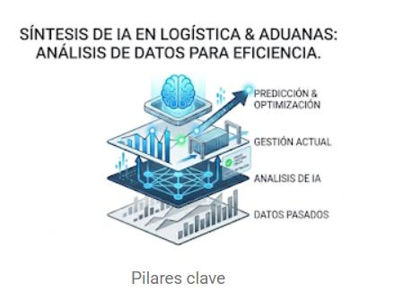
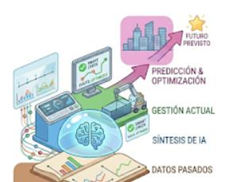
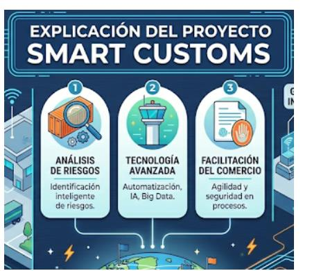

El impacto de la IA aplicada a la logística y aduanas actual.
junio 13, 2026
¿Por qué la IA está revolucionando a la logística y aduanas?

La Inteligencia Artificial (IA) se ha convertido en un pilar fundamental para la optimización de los procesos logísticos y la agilización de las rutas en la cadena de suministro. A través de la identificación automatizada de irregularidades, esta tecnología maximiza la eficiencia operativa en los recintos aduaneros mediante uso de datos pasados para corregir los presentes, fortaleciendo la seguridad fronteriza. Ante este panorama, se sostiene que la implementación de herramientas inteligentes en la gestión aduanera no representa un cambio superficial, sino una transformación estructural que agiliza el flujo comercial global en la agilización, interpretación y análisis de datos, mediante el análisis predictivo de grandes cantidades de datos.
Los 5 pilares fundamentales en la que la IA nos ayuda:
- La seguridad aduanera: Las redes de fraude y el tráfico de mercancías ilícitas frenan el progreso del país. La falta de ética de quienes ceden a los sobornos, sumada a las estrategias de los contrabandistas, genera graves distorsiones sociales como la desigualdad económica. Por esta razón, se ha vuelto prioritario reforzar las defensas aduaneras contra el robo y el contrabando. Según la empresa logística A.P.R. (Aduanas. Transporte. Logística, 2024), los ejes fundamentales para blindar la seguridad aduanera son:
1. Mejora en la Detección de Contrabando y Fraude
2. Optimización de Procesos y Recursos
3. Monitoreo y Predicción de Amenazas
4. Facilitación del Comercio y Reducción de Barreras
5. Seguridad Cibernética
El rol de la IA en la logística y aduanas:
Es importante conocer como funciona la IA en la logistica y aduanas para poder ver en que se basa para resolver problemas del rubro:
La función:
Análisis de riesgos y detección de irregularidades:
El blog de la empresa Sage nos menciona la siguiente cita:
Según la experiencia de compañías como IBM: “Aunque nadie puede prever lo que nos deparará el mañana, podemos trabajar hoy en la construcción de una cadena de suministro global ‘más inteligente’. Las organizaciones pueden aprovechar la IA para ayudar a convertir lo imprevisto en previsto”.
Por lo que se entiende la IA convierte datos pasados en información presente para lograr construir algoritmos de interpretación de datos que usa para la implementación de futuros escenarios que puedan pasar:

Los aspectos a tener en cuenta para la implementación de la IA en estos procesos son:
◉ Trabajar con los proveedores:
Compartir datos con los proveedores permite que la IA detecte anomalías y prevenga problemas de forma temprana.
◉ Detección de patrones y tendencias:
Permite realizar previsiones muy certeras del comportamiento del mercado (forecasting de ventas), adaptando los recursos logísticos a la demanda real.
◉ Sucesos basados en eventos:
La IA no trabaja sola; debe integrarse como una herramienta dentro de los procesos de control ya existentes para detectar excepciones causadas por imprevistos.
¿Que dice la OMA (Organización Mundial de Aduanas)
de esta tecnología?
Según el artículo informativo publicado por el portal digital Aduana News (AN), el Proyecto Smart Customs de la Organización Mundial de Aduanas (OMA) destaca que las administraciones aduaneras a nivel global están aprovechando la Inteligencia Artificial y el Machine Learning para “automatizar procesos rutinarios, optimizar la asignación de recursos, mejorar la evaluación de riesgos, detectar fraudes y agilizar el despacho aduanero” (Aduana News, 2025).
Sin embargo estas grandes revoluciones están siendo encaminada no al empoderamiento de IA, sino al trabajo conjunto entre el poder crítico humano y los recursos de la Inteligencia Artificial. Por lo tanto estas implementando modelos de IA generativa y modelos lingüísticos del tipo GPT-4, está mejorando significativamente la eficiencia operativa mediante la clasificación de documentos y la detección automática de anomalías. En consecuencia, recalca que para garantizar que las decisiones del sistema sean éticas, transparentes y apegadas a las normativas legales, resulta indispensable mantener el enfoque de «Humano en el Circuito» (Human-in-the-Loop, HITL). (Aduana News, 2025)

Aplicación de la IA en la logística comercial:
Aplicación de IA en la Logística · Abrir en YouTube ↗
En definitiva, la inteligencia artificial no ha llegado para reemplazar el discernimiento humano en el comercio internacional, sino para convertirse en su catalizador más potente. La verdadera revolución en la logística y las aduanas radica en la capacidad de transformar datos históricos dispersos en decisiones predictivas y blindadas contra el fraude, el contrabando y la ineficiencia operativa. Al automatizar lo complejo y asegurar un control transparente, esta tecnología no solo moderniza las fronteras, sino que nivela el terreno de juego económico para los países en desarrollo. El éxito del mañana dependerá de mantener un equilibrio inquebrantable entre la velocidad del algoritmo y la ética del control humano, garantizando así una cadena de suministro global verdaderamente ágil, segura y competitiva.
Bibliografías:
- Sage. (2022, 23 de mayo). La importancia de la inteligencia artificial en la logística. Blog de Sage.
https://www.sage.com/es-es/blog/inteligencia-artificial-en-logistica/ - A.P.R. (2024, 18 de marzo). Impacto de la inteligencia artificial en la seguridad aduanera.
https://apr.es/impacto-de-la-inteligencia-artificial-en-la-seguridad-aduanera/ - Transmeridian. (2024, 18 de junio). Inteligencia artificial en aduanas. Blog Transmeridian.
https://transmeridian.pe/inteligencia-artificial-en-aduanas/ - Aduana News. (2025, 2 de abril). La Inteligencia Artificial revoluciona las Aduanas: un informe esclarecedor del Proyecto Smart Customs de la OMA.
Consultar informe - Toyota Material Handling España. (2024, 5 de noviembre). Cómo usar la inteligencia artificial (IA) en logística [Video]. YouTube. https://youtu.be/7m4ajUS9GXQ
- Futura Labs. (2025, 24 de junio). Proyecto Aduanas Inteligentes: Revolución tecnológica en comercio global [Video]. YouTube. https://youtube.com/shorts/16CpAalIHCY
“Hago constar que no he dado ni recibido ayuda no autorizada en la realización de esta asignación.”
“I have neither given nor received any unauthorized aid.”